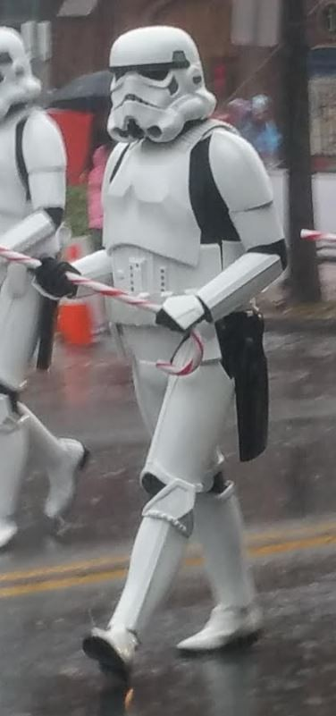
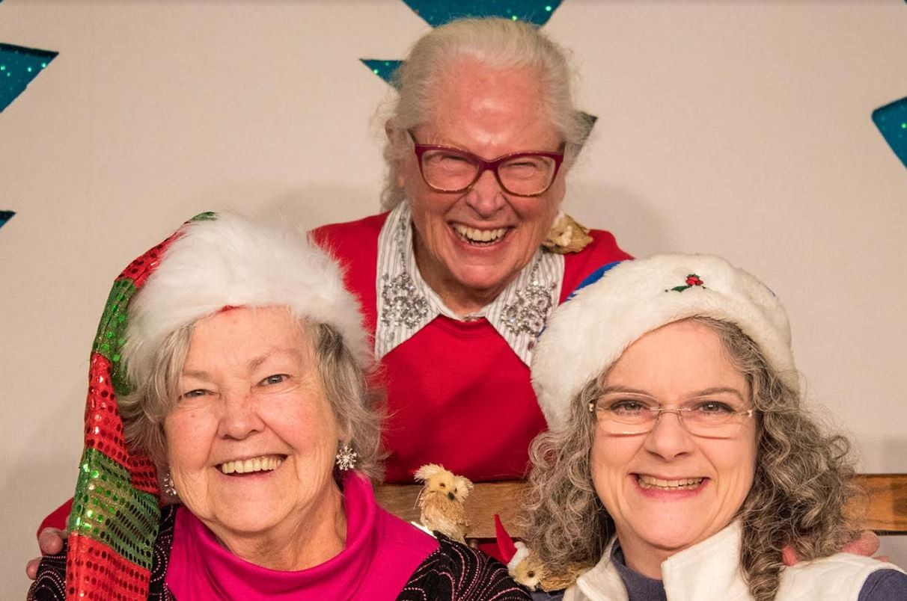
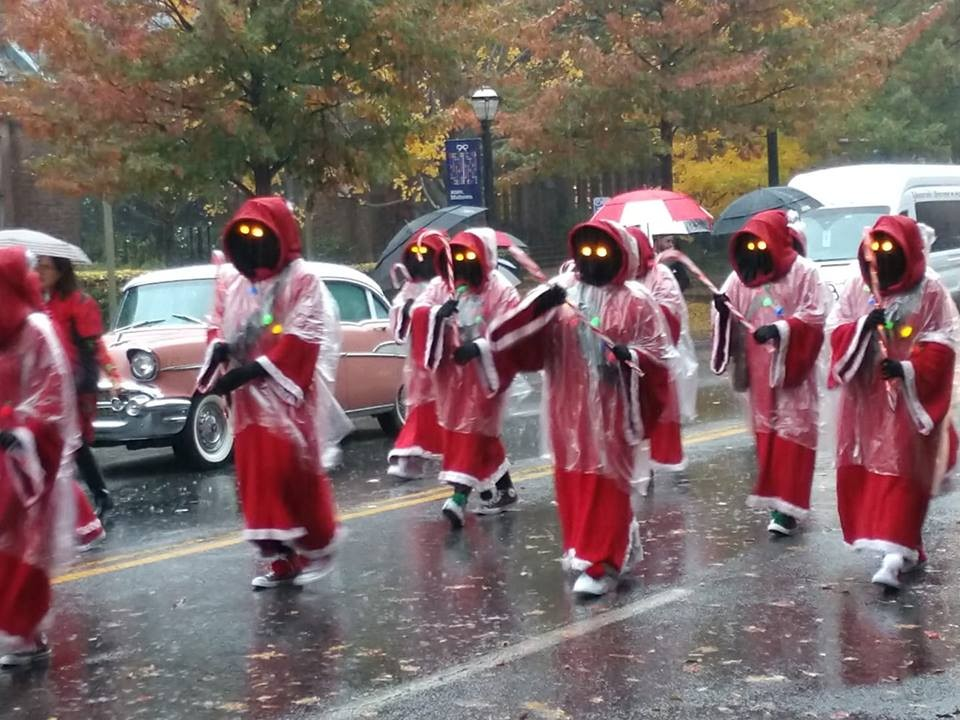

JANUARY 2019 TOTR
Newsletter Of The Alford Memorial Radio Club
The AMRC Proudly Presents 2018 Ham Of The Year
Tom Roderick WA4GIM
January 2019 Contents
President’s Notes
Meeting Information
Membership News/ Birthdays
Member Spotlight– Anthony Acker
Officers/ Committee Chairs
Calendar
Agnes Scott Calendar/ Merchandise/ Net #s
Photo Gallery, Holiday Party , and CHOA
Parade
PSK Meeting Spots/ GA DMR Repeaters
January 2019 President’s Notes
Not your Norman Rockwellian Holiday
This holiday season is very special to me and very different than others in the past.
The next generation is taking charge. Yep! OMG I’m stressed out!! Family gatherings dur-
ing the holidays are rarely stress free. Maybe you have that cousin who ruins dinner by ig-
niting political debates, or despite your efforts, the turkey or ham burns.
So why do we get stressed around the holidays in particular? Expectations are one of
the biggest reasons. We watch the holiday TV specials or remember celebrating as chil-
dren, and anticipate a Rockwellian experience. We think this should be a perfect time, the
food will be perfect, and our conversations will be respectful. Then, reality sets in and we
are disappointed.
In 2018, our club expectations were high, and with the help of the next generation
we had a great year! AMRC continues to host several events where members share our
hobby with the public, schools, and friends and family. New members have stepped up to
fill roles and responsibilities. In 2018 several members activated parks, mountain tops, is-
lands, and seashores. They packed their rigs and went into the field and made contacts
with other hams. Club members supported public events like races and parades. We’re
looking for more of the same enthusiasm in 2019.
The 2019 calendar for Alford Memorial Radio Club is already busy, and beyond
monthly meetings. Plans for special events, training classes, field day, and Hamfest prep
are already in the making. We’re fortunate to have two new officers on the board and look
forward to working with them to make 2019 incredible.
The Stone Mountain Hamfest was a huge success thanks to the many club members
volunteering their time and energy. Thank you all very much. Let’s do it again, but bigger!
So, with that said, the next generation this holiday did fine. I thoroughly enjoyed
not being in the kitchen so much and watching grandchildren playing with cousins. I was
even cooperative running to the store for the forgotten item which after I returned, was
found behind the coffee maker. So, from our family to yours, Happy New Year!
Mike Smith KK4KHS
2

Meeting Information
Annistown Road Baptist Church 4554 Annistown Rd Snellville, GA 30039
Fellowship Hall in the Back of the Church.
January 10, 2019 (7pm)
AMRC Repeaters
146.760– On St. Mtn. approximately 110 ft up the TV
transmission Tower. ECHO LINK available on the 76.
441.8125– on Stone Mountain under the dome.
145.450– Exchange Park
444.250– Exchange Park
224.760– Exchange Park
Repeater Manager Barry Kanne W4TGA
radio.w4tga@gmail.com
Should Old QSOs Be
Forgot And Never
Brought To Mind? Should
Old QSOs Be Forgot And
Auld Lang Syne?
3
AMRC MEMBERSHIP
Happy Birthday from
January 1, 2019=
AMRC
151
Welcome New Member:
Jon Welch, KN4QEP
Become a member of AMRC or renew by
visiting our website http://totr-
radio.org/membership/memapp.htm
Click here.
To Make Changes to your membership
(new address, email, or phone number)
please email
Steve Garrison
Membership Chairman
Steve.n4tty@gmail.com
Happy Belated Birthday
Update or renew your amateur radio li-
cense with the FCC at their website for
free http://wireless.fcc.gov/uls/
index.htm?job=home. Click Here.
Update or renew your ARRL
membership at their website http://
www.arrl.org Click here
Club Dues are Due in January.
Dues help support our repeaters and
club activities. Thank you for promptly
renewing.
Steve Garrison
N4TTY
Membership Chair
Happy Birthday to you, Happy Birthday to you,
Happy Birthday Dear Hams, now go call CQ!
4

Anthony Acker ND4AA
Member Spotlight of the Month
Excerpt taken from Anthony’s QRZ Page. Visit Anthony’s QRZ page for more. Anthony is the new
AMRC Secretary. Welcome to the Board Anthony!
I did it. I took and passed the test to get my General Class ticket on 1 February 2018. Now I need to decide which HF
antenna I want so I can join the conversations on the HF bands. I'm considering the either the Diamond BB7V Multi-
band Vertical Antenna or the Buckmaster 7-Band 300-Watt OCF Dipole Antenna. What are your
thoughts? I live in a community that has an HOA with strict covenants, but I can hide the vertical easily. I will be meas-
uring my backyard for the dipole and check for covert installation.
It's 7 March 2018, and I'm 95% complete with my Buckmaster 7-Band 300 Watt OCF Dipole An-
tenna installation. I'm listening to QSOs on HF for the first time on my rig. I've monitored the 20, 40 and 80-meter
bands so far. Some of it is crystal clear, and some QSOs aren't very legible at all. It's exciting to be hearing folks from
various places in the world.
YAY! On 5 April 2018, I sat for the Extra Class ticket and almost aced it. I went into it with trepidation despite the time I
invested in preparing for the test. When the VE asked me how I thought that I did, I told him that "it could go either
way." The VE said that when he put the template on my exam paper, immediately there was no doubt that I passed. I
thanked the Lord.
If you knew my story as a stroke victim and Service-Connected 100% disabled Vet, you'd understand my trepida-
tions. Memory and concentration is a challenge for me. I share this only to encourage anyone considering taking the test
but feeling intimidated. You CAN DO IT. Just give it a reasonable effort and find a study aid that fits your style. I used
some of Dave Casler's, KE0OG, Amateur Extra Course Introduction: Updated for 11th Edition course. Also, I studied a
little bit using the course offered by LCDR F. L. Benson, USNR (ret.), NC4FB. I also used the Kindle version of The
ARRL Extra Class License Manual.
Additionally, I viewed some of John D's Ham Radio Extra Class License Course. While these were great resources, none
of them were as beneficial as HamTestOnline. After about 36 hours of study using this method I tested for my license
and did far better than I could have expected. It turned out to be the best $35.00 I can remember spending.
As of 24 April 2018, the FCC granted me my new call sign. I'm retiring N4CNT, which is leetspeak for "NASCENT." I
chose “Nascent” at the beginning of my ham career because it means “just coming into existence and beginning to display
signs of future potential.” I'll now be known by the call sign ND4AA. Which renders to "InDeed for Anthony Acker." An
easy mnemonic for recalling my call sign and my name.
Update your QRZ page and let the totr editor know at
gretchelby@gmail.com and you can be chosen for Member Spotlight of the Month.
5

Allison Lynch
AB4YL
Past Club Secretary
Contact Allison on the
air and request her QSL
card.
Send the Totr your QSL card and we
will feature it in the Totr. Or if you
have received a unique card , share it
with the club by sending it to
gretchelby@gmail.com
Ham Radio Member Resolutions Checklist 2019
1. Join/Renew Your Alford Memorial Radio Club Membership
2. Bring one new friend to the meeting this year.
3. Join DeKalb ARES or the ARES organization in your county.
4. Volunteer for one or more community club event, Hamfest, Techfest, Makers Fair,
or Masonic Lodge Events.
5. Activate a Park, Special Events Station, Contest in ARRL, participate in Summits on
the Air.
6. Share your knowledge in a program at the meetings.
7. Sign up for Net Control for 1 Sunday Night Net every quarter.
8. Write a story, send pictures, recipes, QSL card, updated QRZ page to
gretchelby@gmail.com
In Memoriam 2018
Thomas Mullins KC4LOY– 1/1/2018
Cooper Morris WA4PZD– 1/10/2018
Harvey Pearson W4HLP– 4/1/2018
Bob Kinsey KM4BHK– 9/26/2018
Ed Paschal KI4WLW– 11/6/2018
-In our hearts forever-
6


2019 AMRC Officers and Committee Chairs
Mike Smith KK4KHS
Steve Vogel W4PSV
President
Public Information
smithrm71@yahoo.com
svdec@bellsouth.net
Greg Mann KM4RKT
Vice President/ Apparel Mgr
Steve Garrison N4TTY
km4rkt.greg@gmail.com
Membership
Steve.n4tty@gmail.com
Anthony Acker ND4AA
Secretary
Zargon W4PSB
Field Day Chair
Zack Buersmeyer KN4HKB
Treasurer
Gretchen Mann W1MKW
Totr Newsletter Editor
Gene Blackburn N4UJ
gretchelby@gmail.com
W4BOC Trustee
g.blackburn@ieee.org
Frank Haynes KV4SP
Barry Kanne W4TGA
VE Team Chair
Repeater Manager
barry.kanne@gmail.com
Welcome to our new officers...
Jim Penland N4RAR
Anthony Acker ND4AA and
DeKalb ARES EC/ Counsel
Zack Buersmeyer KN4HKB
jwpenland@jwpenland.com
7
January 2019 Calendar
Sunday
Monday
Tuesday
Wednesday Thursday
Friday
Saturday
1
2
3
4
5 Breakfast
New Year’s Emm Comm
7AM Hardees
Day
Rag Chew
Turnip
Turck Net
8pm
11pm
DMR Net
8pm
6
7
8
9
10
11
12 Breakfast
AMRC
Emm Comm AMRC
7am Hardees
State ARES
Sunday
Rag Chew
Monthly
Meeting
Night Net
8pm
Meeting
7pm
Turnip
DMR Net
7pm
Truck Net
8pm
11pm
13
14
15
16
17
18
19 Breakfast
AMRC
Emm Comm
7am Hardees
Sunday
Rag Chew
Night Net
8pm
Turnip
7pm
Truck Net
DMR Net
11pm
8pm
20
21
22
23
24
25
26 Breakfast
AMRC
Emm Comm
7am Hardees
Techfest
Sunday
Rag Chew
GARS
Night Net
8pm
7pm
Turnip
DMR Net
Truck Net
8pm
11pm
27
28
29
30
31
AMRC
Emm Comm
Sunday
Rag Chew
Night Net
8pm
7pm
DMR Net 8pm
8


AMRC Merchandise
Public Information
Jackets
Polo shirts
Tshirts
Hats
By: Steve Vogel W4PSV
2019 Schedule Agnes Scott
Name tags
Observatory and Shack Open House
Emergency Vests
8-9 pm :
January: No Open House
Contact Greg Mann KM4RKT
February8: Chris De Pree (ASC)- Other Worlds in
Science Fiction
km4rkt.greg@gmail.com
March 22: William A Calder Spring Equinox
Cash, Credit/Debit, Checks
Concert
Google Pay, and Apple Pay
April 12: Alumna Lecture and Open House
Accepted.
May 3: Kevin Marvel (American Astronomical
Society)
For More Info about Agnes Scott Partnership or
Events, contact Steve Vogel W4PSV
svdec@bellsouth.net
DECEMBER 2018 NET NUMBERS
To participate as Net Control for the Sunday Night Net , please go to the
club’s website at https://www.totr-radio.org. Scroll down and Click on the
link to the Net Control sign up sheet or click here. Thanks for your help.
9


2018 Holiday Party and CHOA
Parade. Thank you to all our
members who participated.
Happy New Year.
10

We hope
you all had a
wonderful
Holiday !
Many more
From the
Alford
Memorial
Radio Club!
11
PSK31 meeting spots on HF:
PSK 31 Meeting Spots
160 meters – 1.838.150 MHz
80 meters – 3.580.150 MHz
40 meters – 7.040.150 MHz
30 meters – 10.142.150 MHz
20 meters – 14.070.150 MHz
17 meters – 18.100.150 MHz
15 meters – 21.070.150 MHz
12 meters – 24.920.150 MHz
10 meters – 28.120.150 MHz
Every day you can tune into 14.070 MHz and hear the warbling of PSK31, i find this a good place to start
for Europe wide contacts.
K = Over
KN = Over (and only the station addressed should respond)
SK = Silent Key (used at the end of a QSO – means you’ve finished transmitting to the other station)
BTU = Back to You
TNX = Thanks
PSE = Please
OM = Old Man (used to refer to any male operator)
FB = Fine Business (good)
GM = Good Morning
GD = Good Day
GE = Good Evening
Sending a CQ call
Answering a CQ call
Starting a QSO (<their-call> de <your-call>)
Your station details (Name/Location/Grid Reference/Radio/Antenna etc…)
Ending a QSO (SK)
Warning! Once you
check into the Turnip
Truck Net on Saturday
Night at 11pm, you will
forever be known as a
Turnip.
Once a Turnip, Always
a Turnip.
Choose wisely.
12
13

HRO Atlanta, Georgia
6071 Buford Hwy NE,
Law Offices of
Atlanta, GA 30340
Ruth Primm and
Store Hours Mon -Sat
(10am– 5:30pm)
James Penland
770-263-0700 (Phone)
770-263-9548 (Fax)
www.northlakelawfirm.com
atlanta@hamradio.com
Come to breakfast for food &
conversation every
Saturday at 7am at
Hardees located at 5259
Stone Mountain Hwy Stone
Mountain, GA 30087.
Watts, Allison’s (AB4YL )
Family Dog Does his Best
Impression of a Power
Pole. Send us your Pet
doing HAM radio or
impressions of Ham
equipment and we will
ARRL Contest Calendar Jan-Feb 2019
include them in the Totr.
14